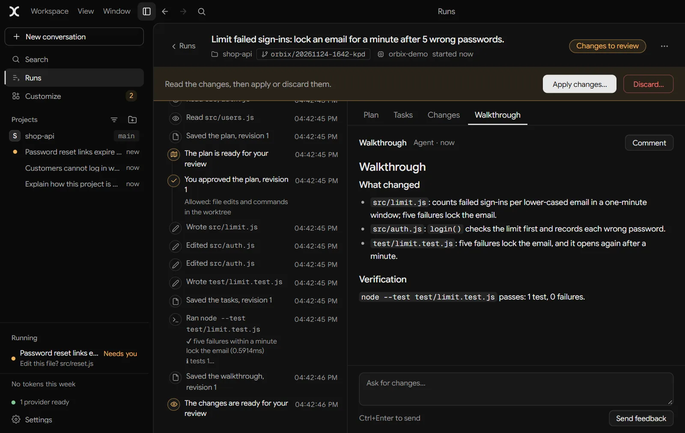
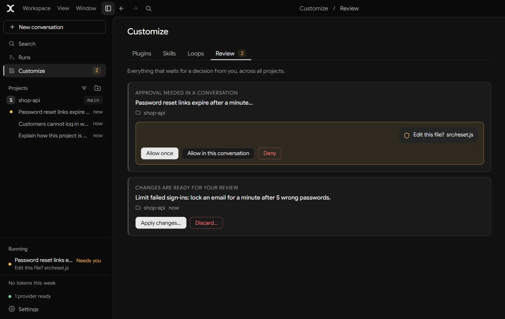
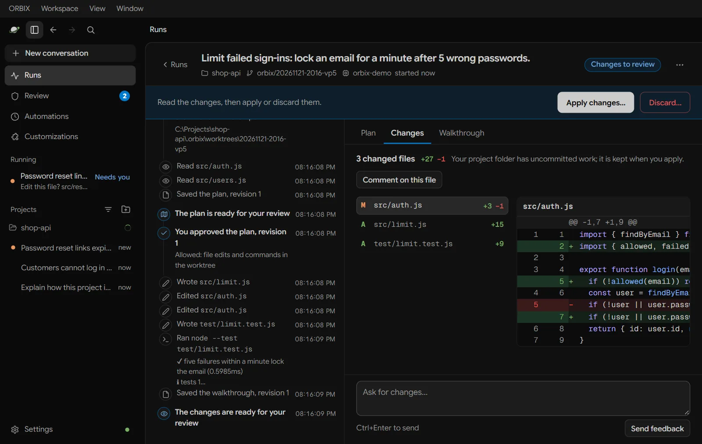
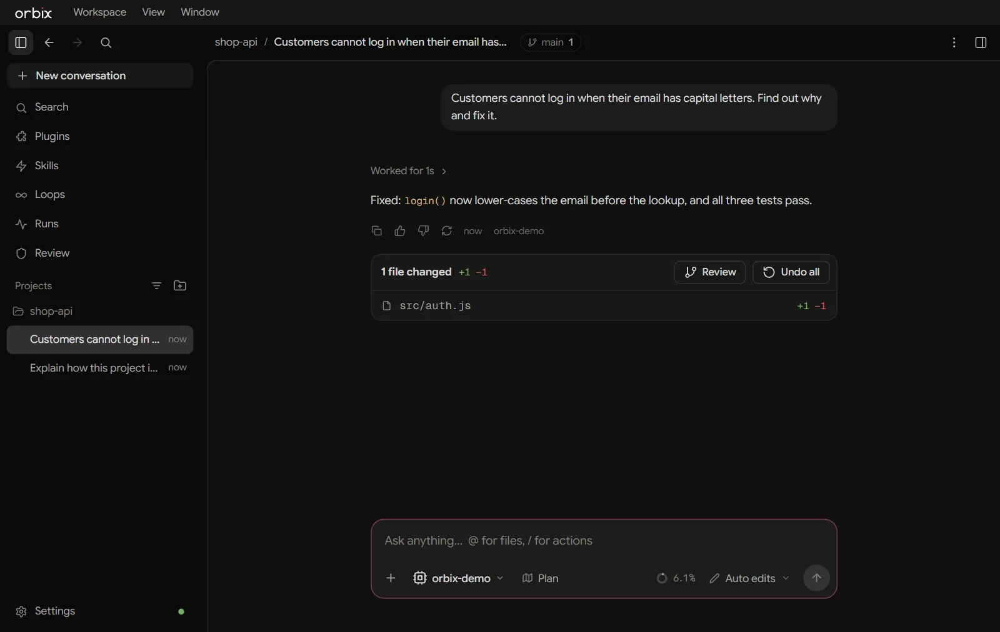
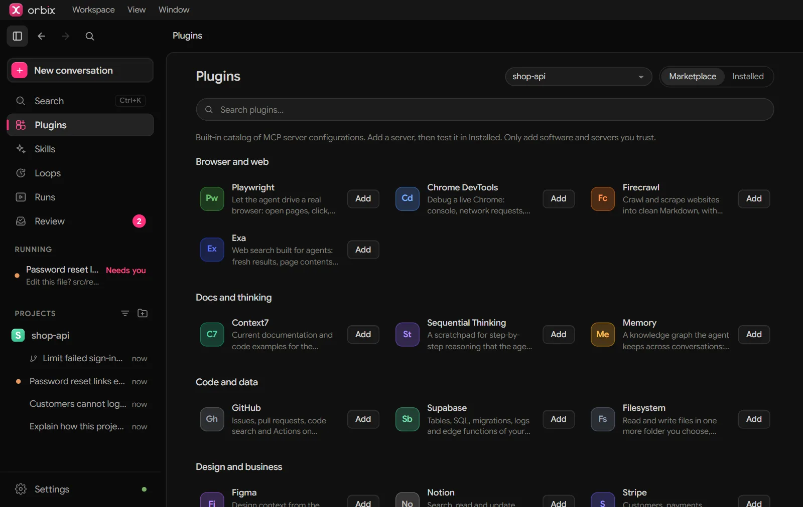
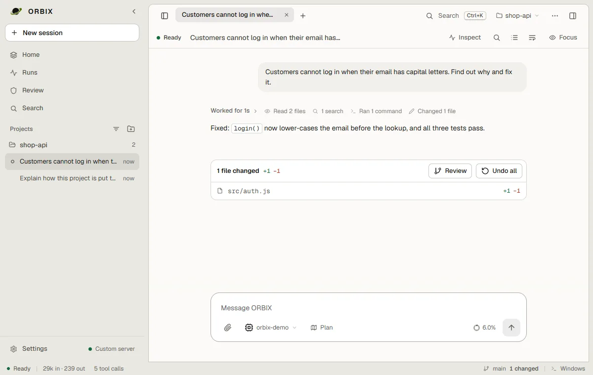

Every coding agent. Your PC or your cloud.
ORBIX is an agentic development environment for Windows. Use its own agent with any model, or Claude Code, Codex, OpenCode and any ACP agent on the plans you already pay for. Every agent asks before it edits a file or runs a command. Run it on this PC, or on a Linux machine you own that keeps working while your laptop sleeps.
ORBIX-Setup-4.0.0.exe- 116 MB
- Windows 10 and 11, x64
- No admin rights

- Version
- 4.0.0
- Released
- Nov 21, 2026
- Installer
- 116 MB, per user
- Agents
- ORBIX, Claude Code, Codex, OpenCode, any ACP
- Providers
- 17, plus custom servers
- License
- FSL-1.1-MIT
Agents
Bring the agents you already pay for.
Pick an agent in the model picker as you pick a model. It keeps its own loop, tools, login and history; ORBIX shows its work as steps, asks before it runs a command or changes a file, and resumes its own session when you reopen the conversation.
-
The ORBIX agent
Its own loop with any of 17 providers, local models or your own server: undo per edit, plans, runs in worktrees, self-checks.
-
Claude Code
On your Claude plan or API key. Its permission questions become ORBIX approval cards; effort and model switch from the composer.
-
Codex
On your ChatGPT plan, through
codex app-server. Its sandbox stays on; its command and file approvals ask you in ORBIX. -
OpenCode
75+ providers over the Agent Client Protocol, with its own model list in the picker.
-
Any ACP agent
Gemini CLI, Hermes, Kimi, Droid, Goose or your own: add its command in Settings → Agents.
-
One set of rules
Ask first, Auto edits and Turbo apply to every agent. A destructive command asks in every mode, whichever agent wants to run it.
ORBIX Cloud
Close the lid. It keeps working.
Run ORBIX on a Linux machine you own, such as a VPS. Open it from the app, and move a conversation there with its project. Nothing goes through our servers: there are none.
-
1
Install on the machine
One command on Ubuntu or Debian sets ORBIX up as a service and prints its address and token.
curl -fsSL https://orbix-agent.vercel.app/install.sh | bash -
2
Add it in the app
Settings → Machines → Add, with the address and the token. Open switches the window to the machine; Back to this PC returns.
Settings → Machines -
3
Move a conversation
Conversation menu → Move to a machine. The project goes with its git history and uncommitted changes, and the conversation continues there.
Teleport
The server listens on 127.0.0.1 only. Reach it with Tailscale, an SSH tunnel or HTTPS in front of it; the app refuses plain http:// across the internet. The token is stored encrypted on your PC and sent only to that machine.
How a run works
From a task to changes you have read.
Every run works in its own git worktree, so your checkout is untouched until you apply. Several runs can work at once.
-
1
Describe the task
Open a Git project in Runs (Ctrl+2) and write what should change. Choose Plan first or Straight to work.
Ctrl+2 -
2
Read the plan
The agent reads the code and writes a plan, changing nothing. Comment on any passage and it writes a new revision.
Revisions kept -
3
Approve a scope
Allow file edits, or edits and commands, inside the run’s own worktree and branch. Deleting, pushing or publishing still asks every time.
Own worktree -
4
Review, then apply
Read the diff, the test log and the walkthrough. Apply merges into your branch and keeps your own uncommitted work. Discard removes it all.
Apply or discard
Permissions
It asks before it acts.
Reading and searching run freely. Edits and commands follow one chip in the message box. Pick how much may run without asking.
Each file edit and command waits for your OK. This is the default. File edits run without asking, and each can be undone. Commands wait for your OK. Edits and commands run without asking, also outside the project. Turning it on asks you to confirm. Destructive commands still ask.
- Read and search the projectRuns
- Edit
src/auth.jsAsks youRuns, can be undoneRuns, can be undone - Run
npm testAsks youAsks youRuns - Edit a file outside the projectAsks youAsks youRuns
- Delete a folder, push or publishAsks you
Features
An agent, a diff viewer, a terminal and git in one window.
You bring a model: an API key, a sign-in, or a model on your own PC. Everything else is in the app.
-
Runs Ctrl+2
A task planned, approved and done in its own worktree, with a timeline, a test log and a walkthrough to review.
- Plan
- Approve
- Work
- Review
- Apply
-
Review queue Ctrl+3
One list across projects of everything that waits for you: approvals, plans, finished changes.
-
Recovery
If ORBIX closes mid-run, the run says what was in flight and continues only when you say so.
-
Automations
A prompt ORBIX starts by itself every hour, every day, on weekdays or every week, as a new conversation in its project. In Ask first, a run still waits for your OK.
-
Built-in browser
In the Windows app, any site next to the conversation, with its own session and downloads. It starts on the web apps running on your PC.
-
Side question
Ask about the conversation while the agent works, or type
/btw. It answers without tools and adds nothing to the chat. -
Changes panel
Every edit as a diff next to the chat. Stage, discard and commit without leaving.
-
Self-checks
After edits it can run the project’s test or build command (it asks first by default), then reviews its own diff once.
-
Windows or WSL
Commands run in WSL or on Windows with cmd.exe or PowerShell. Output streams live, and Esc stops it.
-
Project rules
Reads
AGENTS.mdorCLAUDE.md, and rule files in.agents/rulesthat apply always, by file pattern, when relevant, or on request. -
Customizations
A marketplace of MCP servers added in one click (Playwright, GitHub, Context7, Figma…), plus skills, rules, slash commands and hooks.
-
Themes
System, Dark, Light, Midnight and Frost, five animated scene themes, and Windows high-contrast support.
-
Settings and shortcuts
Settings in one card, with a page per project. Change any keyboard shortcut; Ctrl+K finds any setting.
Screens
Screens from 4.0.0.






Taken from the real app on a sample project with a scripted local model. The tools in them really ran.
Models
Bring your own model.
17 providers and any OpenAI-compatible server. Model lists come live from each provider. Prices and context sizes come from the models.dev catalog. Keys are checked before they are saved.
- AnthropicAPI key
- OpenAIAPI key or ChatGPT sign-in
- Google GeminiAPI key
- xAIAPI key or sign-in
- OpenRouterAPI key or sign-in
- OpenCodeZen, sign-in or Go plan
- GroqAPI key
- MistralAPI key
- DeepSeekAPI key
- Together AIAPI key
- Fireworks AIAPI key
- CerebrasAPI key
- MoonshotAPI key
- Z.aiAPI key
- QwenAPI key
- OllamaOn this PC
- LM StudioOn this PC
- Custom serverAny OpenAI-compatible URL
Custom server covers vLLM, llama.cpp or a company gateway. With Ollama or LM Studio, your messages and code stay on your PC.
Privacy
What stays on your PC, and what doesn’t.
Approvals are a checkpoint, not a sandbox. The agent runs with your own user permissions, so read what you approve.
Stays here
- API keys, encrypted for your Windows account and never logged.
- Conversations and settings, in
%LOCALAPPDATA%\ORBIXas plain files. - The local server, on
127.0.0.1only, with a new token each launch. - Your messages and the files the agent reads, when you use Ollama or LM Studio.
Leaves your PC
- Your messages, project rules and the files the agent reads, to the model provider you chose.
- Each key, only to the provider it belongs to. Sign-ins (ChatGPT, xAI, OpenCode, OpenRouter) go to that provider.
- A download of the model catalog from models.dev, at most once a day.
- Web reads and searches, when the agent uses
web_fetchorweb_search. - Whatever the MCP servers you add send, and the pages you open in the built-in browser.
- Update checks, to this project’s GitHub releases, unless you turn them off. Downloads are verified with SHA-512.
- There is no ORBIX account and no telemetry.
Releases
Releases
- 4.0.0Claude Code, Codex, OpenCode and any ACP agent run conversations in ORBIX with your own plans. ORBIX Cloud: a server for a Linux machine you own, Machines in Settings, and moving a conversation there with its project.Latest
- 3.9.0A new Home, a Customizations page with a marketplace of MCP servers, Automations from one sentence, and new Appearance and Application settings.
- 3.8.0Chat first: the side panel starts closed, a narrower sidebar and column, sharper replies with quieter inline code, and 👍 / 👎 on every reply.
- 3.7.0Settings redesigned as one card, shortcuts you can change, network access rules for web reads, a built-in browser in the Windows app, project pages and Give feedback.
- 3.6.0Automations on a schedule, a Browser tab that previews the apps running on your PC, side questions with /btw, and rule files with triggers.
- 3.3.0Runs: a task planned, approved and done in its own git worktree, then reviewed and applied. One Review queue, recovery after a restart, folded steps.
- 3.0.0First release of ORBIX as a Windows app with its own agent.
Every release, fixes included, is in CHANGELOG.md and on GitHub.
Questions
Before you install.
Something else? Ask on GitHub.
Do I need an account?
ORBIX has no account of its own. You bring a model: an API key from a provider, a sign-in such as your ChatGPT plan or OpenRouter, or a model running on your own PC.
Can I undo what the agent changed?
Yes. Every file change has its own undo, and /undo reverts a whole reply. Commands cannot be undone, which is why they ask first by default.
Will it change files or run commands without asking?
Not by default. Reading and searching run without asking (Settings → General → Network access rules limits the sites it may read); edits and commands wait for your OK. The permission chip can let file edits (Auto edits), or edits and commands (Turbo), run on their own. Turbo asks you to confirm first, and destructive commands (deleting folders, pushing, publishing) still ask in every mode.
Can it work while I am away?
On a machine (ORBIX Cloud), yes, with your PC off. On your PC, automations start a prompt on a schedule (every hour, every day, on weekdays or every week) while ORBIX is open. A time missed while it was closed is skipped. Each run is a normal conversation, so in Ask first it waits for your OK in Review before it edits or runs anything.
Can I use Claude Code or Codex in it?
Yes, if it is installed and signed in on that computer: ORBIX finds it (Settings → Agents shows what it found) and lists it in the model picker. The agent uses its own plan or key; ORBIX does not see or store its login.
What is ORBIX Cloud?
The ORBIX server on a Linux machine you own. It runs the same agents, keeps working while your PC is off, and opens in the app from Settings → Machines. There is no hosted service and no account; you run the machine.
Do I need WSL?
No. Commands, tools, MCP servers, git and hooks run in one place: a WSL distribution, or Windows with cmd.exe or PowerShell.
Why does Windows warn about the installer?
The installer is not code-signed yet, so SmartScreen asks the first time. Choose More info, then Run anyway. Later updates install without the warning.
How does it update?
It checks GitHub when it opens and every 4 hours, downloads in the background and installs when you close ORBIX. Restart at the bottom of the sidebar installs at once. You can turn this off in Settings → Application.
Is it free?
ORBIX is free to use. The source is available under the Functional Source License, and each release becomes MIT two years after it ships. Your model provider charges for its own usage.
Install ORBIX
- 1Run
ORBIX-Setup-4.0.0.exe. It installs for your account only. - 2Open Settings → Providers and connect a model.
- 3Open a project folder, describe a task and press Enter.